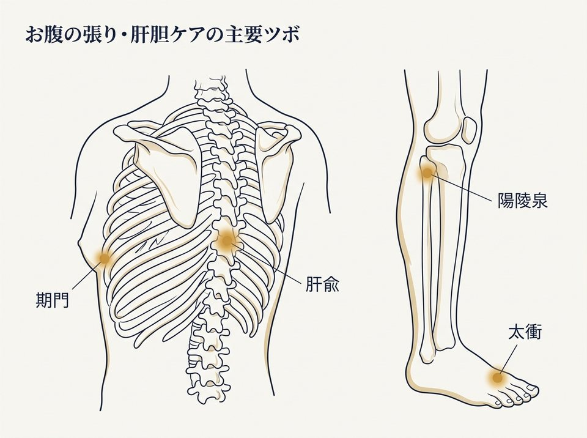

胸膜炎の鍼灸
肺を覆う胸膜に炎症が起きて胸水が溜まり、深呼吸で悪化する胸痛や呼吸困難を生じる状態です。


院長YouTube解説・関連動画
公開日：２０２１年 ２月２３日
更新日：２０２１年 ５月 １５日
本日は胸膜炎について解説させていただきます。
☆本記事の内容
- •胸膜炎とは
- •胸膜炎の原因
- •胸膜炎の症状
- •胸膜炎の改善方法
- •胸膜炎のまとめ
- •胸膜炎は、胸膜に炎症が起きてしまうこと
- •胸膜炎は原因によって種類が分かれている
- •胸膜炎の症状は、突然起こる胸の痛み
- •胸膜炎では、原因に対しての改善を中心に行う
- •病院に行くことが大事
- •胸膜炎の改善例
銀座そうぜん鍼灸院の宗前です。
このページを書いている私は、鍼灸師として１３年、担当した利用者様数８０，０００人を誇り、病気の休職者３００人を社会復帰できるまで回復させてきた実績があります。
胸膜炎の症状は、突然起こる胸の痛み
胸膜炎の症状は、突然起こる胸の痛みです。この突然起こる胸の痛みは、なんとなくで感じる不快感程度のものから激しく刺す程激しい痛みまで色々な痛みがあります。
多くの人は胸の痛みをピリピリ痛む痛みに感じます。この胸の痛みは、大きく息を吸ったときに悪化します。
胸水が増えると肺が圧迫されてしまうため、呼吸困難を起こしてしまうこともあります。
胸膜炎で起こる主な症状は、咳や痰、激しい動悸などです。他にも、発熱や悪寒、全身の倦怠感などの症状も現れることが多いです。
さらに、胸膜炎が起こると胸膜腔に胸水がたまるため、胸膜腔が膨らみ心臓や肺を圧迫します。その圧迫から発熱や胸の痛み、咳、息切れなども起こるのです。
胸膜炎は一般的に、肺を覆う胸膜が炎症を起こす状態です。この病気は、さまざまな症状を引き起こす可能性があります。ここでは、胸膜炎の症状について詳しく説明します。
胸膜炎の最も一般的な症状は、胸痛です。これは通常、深く息を吸ったり、咳をしたり、体を動かしたりすると悪化します。これは、炎症を起こした胸膜が摩擦し、痛みを引き起こすためです。特に、胸部の片側に激しい痛みがある場合、それは胸膜炎の可能性を示しています。
呼吸困難もまた、胸膜炎の一般的な症状です。これは、肺が正常に膨らまないため、または胸膜炎によって胸腔内に液体が溜まることで、肺の機能が低下するためです。呼吸困難は、特に運動時にはっきりと現れることが多いです。
次に、発熱と寒気も胸膜炎の症状です。これらは、体が感染症と戦うための自然な反応で、胸膜炎が感染症によって引き起こされる場合、特に一般的です。
他の症状としては、急激な体重減少、無力感や疲労感、食欲不振などがあります。これらは全身的な症状で、体が炎症や感染症と戦っている証拠です。
また、長期間にわたる咳や呼吸短促、血痰などの呼吸器症状も胸膜炎の一部となることがあります。これらの症状がある場合、それはしばしば胸膜炎が他の肺の病気、たとえば肺炎や肺結核、肺癌と関連している可能性を示しています。
胸膜炎の症状は、原因となる病気や個々の体質によって変わる可能性があります。また、症状の重度は胸膜炎の形態によっても異なる可能性があります。
急性胸膜炎の場合、症状は急激に現れ、しばしば強烈であることが特徴です。一方で、慢性胸膜炎では、症状は徐々に発展し、数週間、または数ヶ月にわたって持続することがあります。
また、いくつかの特定の病気や状態により、他の特異的な症状が引き起こされることがあります。例えば、結核性胸膜炎の場合、夜間の発汗、慢性咳、体重減少などの典型的な結核の症状が見られることがあります。
重度の胸膜炎の場合、胸腔内に大量の液体が溜まる可能性があり、これにより呼吸不全を引き起こすことがあります。この状態は、呼吸の困難さを増加させ、深刻な健康問題を引き起こす可能性があります。
胸膜炎を改善するためには、原因に対しての改善を中心に行います。
原因が感染症の場合は、感染症の原因となっている菌に対して有効な抗菌薬を使います。原因が悪性腫瘍の場合は、悪性腫瘍に有効な抗癌剤や放射線などを使います。
原因が心不全の場合は強心剤を使います。原因が結核の場合は、抗結核剤を使って改善を行います。
胸膜炎の原因が癌の場合の改善には、胸膜を癒着させるために胸膜癒着術を行うこともあります。
胸水の量が多い場合は、息が苦しくなります。そのため、薬などを使った方法と合わせて胸膜の間に管を入れて胸水を体の外に抜くための処置を行います。
胸腔に膿が溜まってしまった場合は、膿が溜まってから3カ月以内の時は胸腔ドレナージで改善を行います。それ以上時間が経ってしまっている時は改善するために胸腔鏡下での手術が必要なこともあります。
胸膜炎は肺を覆う胸膜が炎症を起こす状態で、感染症、外傷、自己免疫に関する病気、肺の病気など、さまざまな原因があります。胸膜炎の改善方法はその原因、症状の重度、全体的な健康状態などに基づいて決定されます。
薬：胸膜炎の最も一般的な改善法の一つは薬です。細菌感染が原因である場合、抗生物質が最初に投与されます。ウイルス感染に対しては特定の抗ウイルス薬が使用される場合もありますが、多くの場合、ウイルス感染は自然に回復します。自己免疫に関する病気が原因である場合は、免疫系を抑制する薬物が用いられることがあります。また、痛みを和らげ、炎症を減少させるために、非ステロイド性抗炎症薬やステロイドが投与されることもあります。
胸水排出：胸膜炎が胸膜間腔に液体を溜め込む場合、これを除去する必要があります。これは通常、胸腔ドレナージと呼ばれる手術的な手順で行われます。細いチューブを胸壁を通して胸膜間腔に挿入し、胸水を排出します。これにより、肺の圧迫を和らげ、呼吸を楽にします。
手術：胸膜炎が反復する場合や、胸水が再度溜まる場合、より強力な手段を取ることが必要になることがあります。胸膜剥離術や胸膜固定術がこれに該当します。これらの手術は通常、一般麻酔下で行われ数日間入院することが必要になることがあります。
放射線や抗がん剤：胸膜炎が肺癌や胸膜中皮腫といった癌に起因する場合、放射線や抗がん剤が必要となることがあります。これらの方法は癌細胞を破壊し、胸膜炎の原因を直接的に取り除くことを目的としています。
呼吸法：呼吸困難が胸膜炎の主な症状である場合、呼吸法が有効です。これには酸素療法や気管内挿管、場合によっては人工呼吸器の使用が含まれます。
胸膜炎の改善方法は具体的な状況により異なるため、計画は専門医により個別に策定されます。本人と医師が連携し、適応する改善方法の効果を定期的に評価し、必要に応じて調整することが最善の結果をもたらします。
改善を行うに加えて、生活習慣の改善も胸膜炎の管理に役立つことがあります。例えば、喫煙は肺と胸膜にさらなるダメージを与える可能性があるため、禁煙は胸膜炎の改善において重要な一部となります。また、健康的な食事と適度な運動は一般的な健康状態を改善し、体の自然な改善の能力を強化します。
最後に、胸膜炎の改善は単なる症状の管理だけでなく、可能であればその根本的な原因の解決を目指すべきです。これにより、胸膜炎の再発を防ぎ、生活の質を向上させることが可能になります。
感染による胸膜炎になりやすいのは、高齢の場合や糖尿病、心臓、肺、腎臓、肝臓、神経などに慢性の病気がある場合、がんやHIV感染症などの免疫を弱くする疾患がある場合、免疫を抑えるための薬を使っている場合などです。
胸膜炎では、原因に対しての改善を行うことが大切です。胸膜炎の原因は様々です。原因を正確に特定し、その上で介入し改善を行うことが重要です。
どのような原因で胸膜炎を起こしてしまったとしても、自分だけで対処できることはありません。突然胸に痛みが起きた時には、きちんと病院に行きましょう。
胸膜炎の改善例
私の臨床経験からの一例を共有します。プライバシーを尊重するため、特定の個人を特定できる情報は使用していません。
ある日、50歳の男性が風邪のような症状と息苦しさで当クリニックを訪れました。彼は以前に健康問題を抱えておらず、体調の急変に驚いていました。彼の体温は38.5度で、急速な呼吸と苦痛を伴う咳を伴っていました。彼の片方の肺で呼吸音が減少していることがわかり、さらに胸部X線画像により、彼の肺の一部に液体の蓄積が確認されました。その結果、彼は胸膜炎と判断されました。
判断の確認と感染原因の特定のために、胸水のサンプルを採取するための手術的な手順、すなわち胸腔穿刺が行われました。この手順は局所麻酔下で行われ、液体を胸腔から抽出するための細い針が胸壁に挿入されます。
その後、抽出された胸水を調査し、感染の原因を特定するための細菌培養が行われました。培養結果から、彼が肺炎球菌による感染を発症していることが明らかになりました。そのため、彼には即座に適切な抗生物質が投与され、痛みと炎症を抑えるために非ステロイド性抗炎症薬も処方されました。
また、胸水が再度溜まるのを防ぐため、彼の胸腔には一時的なチューブが挿入され、余分な液体が体外に排出されるようにしました。この改善方法は彼の症状を大幅に改善し、彼の体は抗生物質による改善を受け入れ始めました。
彼は1週間ほど入院し、その間に定期的に調べ、胸水が再蓄積していないことを確認しました。その後、彼の症状は明らかに改善し、体温も正常に戻りました。胸水の排出も成功し、チューブは安全に除去されました。
退院時には、抗生物質を完了するための追加の薬と、必要に応じて痛みを管理するための薬が処方されました。また、リハビリテーションとしての呼吸法も指導され、これにより彼は自宅で肺機能を徐々に回復させることができました。退院後も定期的にクリニックを訪れ、経過観察と必要に応じた追加の改善を行いました。
その後数ヶ月にわたり、彼は定期的に当クリニックを訪れ、健康状態をチェックしました。幸いにも彼の胸膜炎は再発せず、数ヶ月後の胸部X線では正常な結果が戻ってきました。
最終的に、この男性患者は胸膜炎から完全に回復しました。彼のケースは、適切な判断と改善が胸膜炎にとって如何に重要であるかを示しています。
▼ 詳しく知りたい項目だけタップして開けます（全項目の医学解説を収録）
01. 原因とメカニズム
なぜ症状が起きるのか・鍼灸の作用機序を読む
▼
01. 原因とメカニズム
なぜ症状が起きるのか・鍼灸の作用機序を読む
両肺の表面を覆う2枚の薄い膜（胸膜）に炎症が生じ、多くは胸膜の間に胸水が貯留する状態です。単独で発症することは少なく、肺炎や結核などの感染症、肺がんや胸膜中皮腫などの悪性腫瘍、膠原病などの自己免疫疾患、外傷、薬物反応、心不全、さらに肝硬変や膵炎といった腹部疾患に続発して起こります。
なぜ鍼灸で改善へ向かうのか？（作用機序の図解）
胸膜炎に対する鍼灸は、脳腸相関と迷走神経反射による胃腸運動の調整機序を通じて、お体本来の回復力を引き出します。
胃腸機能と深く結びつく四肢・腹部の経穴を刺激し、体性感覚神経から中枢へ信号を送ります。
脳幹を経由した体性-内臓反射により、副交感神経（迷走神経）経由で胃腸の働きを調整します。
弱まったぜん動を促す一方、下痢型の過剰な収縮や内臓知覚過敏は穏やかに鎮静します。
ストレスで乱れにくい胃腸の土台を整え、胃もたれ・便通異常・吐き気の軽減を目指します。
02. よくあるお悩み
このような症状はありませんか？（4項目）
▼
02. よくあるお悩み
このような症状はありませんか？（4項目）
- ✓深呼吸や咳、体動で悪化する刺すような胸の痛みがある
- ✓息切れや呼吸のしにくさ、動悸を感じている
- ✓発熱や悪寒、咳・痰（血痰を含む）が続いている
- ✓全身の倦怠感や原因不明の体重減少がある
03. 当院の施術アプローチ
施術の進め方・改善のポイントを見る
▼
03. 当院の施術アプローチ
施術の進め方・改善のポイントを見る
04. ツボ詳細・セルフケア一覧
呼吸器・喘息・COPD・息苦しさ緩和の全身ツボ図解（6穴）
▼
04. ツボ詳細・セルフケア一覧
呼吸器・喘息・COPD・息苦しさ緩和の全身ツボ図解（6穴）
実際の施術ではお一人おひとりの体質・症状に合わせて選穴しますが、気管支喘息・COPD・慢性咳嗽・呼吸困難の標準治療併用サポートの臨床でよく用いられる代表的なツボの目安です。
| ツボ名 | 位置の目安 | 主な狙い | セルフケアの注意点 |
|---|---|---|---|
| 定喘（ていぜん） | 首を前に倒して出る背骨のすぐ横 | 咳込み・喘鳴・呼吸補助筋の緊張緩和 | 背部・胸部への深い刺鍼は避け安全な角度・深さで行います。 |
| 肺兪（はいゆ） | 肩甲骨の間、第3胸椎のすぐ外側 | 気道周囲の自律神経バランス・背部のこわばり緩和 | カイロや温灸で背中を温めるケアも有効です。 |
| 膻中（だんちゅう） | 左右の乳頭を結ぶ線の中央（胸骨上） | 胸郭の圧迫感・息苦しさに伴う不安の鎮静 | 手のひらで優しくさすりながらゆっくり息を吐きます。 |
| 列缺（れっけつ） | 手首の親指側、シワから指2本分肘寄り | 呼吸器系（肺経）の最重要遠隔穴 | 吸入薬などの標準治療を必ず継続したうえで併用します。 |
| 魚際（ぎょさい） | 親指の付け根のふくらみの縁 | 息苦しさ・咳・のどの熱感の緩和（肺がん呼吸困難研究でも使用） | 手首・親指周りを優しく揉みほぐします。 |
| 合谷（ごうこく） | 手の甲、親指と人差し指の間 | 呼吸困難に伴う不安と全身緊張の軽減 | 急激な息苦しさや発作時は直ちに医療機関を受診してください。 |
05. 医学的根拠・国際査読論文（PubMed / Cochrane）
科学的エビデンス・出典リンク一覧（4件）
▼
05. 医学的根拠・国際査読論文（PubMed / Cochrane）
科学的エビデンス・出典リンク一覧（4件）
国際的な医学データベース（PubMed・Cochrane等）で報告されている気管支喘息・COPD・慢性咳嗽・呼吸困難の標準治療併用サポート領域の代表的な査読済み鍼灸研究をまとめています（標準治療との併用や研究上の限界を含めて正確に掲載）。
| 年・研究デザイン | 対象・規模 | 主な結果 | 限界・出典 |
|---|---|---|---|
| 2016年 大規模多施設RCT | 慢性重症機能性便秘 1,075名（15病院） | 週平均完全自発排便回数が電鍼+1.76 vs シャム+0.87（P<0.001）、20週追跡時も持続（P<0.001）。 | 20週以降の長期経過は未評価。 Ann Intern Med (PMID: 27618593) |
| 2020年 多施設RCT | 機能性ディスペプシア（PDS）278名（5施設） | 4週時点の総合改善反応率83.0% vs シャム51.6%（P<0.001）、終了後12週間維持。 | 16週脱落率18%・施術者盲検化不可。 Ann Intern Med (PMID: 32422066) |
| 2025年 多施設RCT | 下痢型過敏性腸症候群（IBS-D）280名（6病院） | 6週時点の複合反応率57.9% vs シャム41.4%（RR 1.40, P=0.008）、重篤な有害事象なし。 | IBS-D限定・中国多施設試験。 Gastroenterology (PMID: 40441496) |
| 2017年 メタ解析 | 胃食道逆流症（GERD）12 RCTs（n=1,235） | 鍼＋西洋薬併用は西洋薬単独より総合改善優位（RR 1.17, p=0.03）、再発率低下（RR 0.42, p<0.001）。 | 組入れ試験の質が低く標準治療との併用が前提。 Acupunct Med (PMID: 28689187) |
参考文献・出典
- 2016年 大規模多施設RCT（慢性重症機能性便秘 1,075名（15病院））— Ann Intern Med (PMID: 27618593)
- 2020年 多施設RCT（機能性ディスペプシア（PDS）278名（5施設））— Ann Intern Med (PMID: 32422066)
- 2025年 多施設RCT（下痢型過敏性腸症候群（IBS-D）280名（6病院））— Gastroenterology (PMID: 40441496)
- 2017年 メタ解析（胃食道逆流症（GERD）12 RCTs（n=1,235））— Acupunct Med (PMID: 28689187)
06. よくある質問（FAQ）
よくあるご質問を見る（2件）
▼
06. よくある質問（FAQ）
よくあるご質問を見る（2件）
Q. 深呼吸すると胸がピリピリ痛みます。様子を見ても大丈夫ですか？
突然の胸痛や息切れは胸膜炎やその他の重篤な疾患のサインのことがあるため、様子見をせず速やかに医療機関を受診してください。
Q. 胸膜炎の治療後に鍼灸を受けることはできますか？
原因疾患の治療が完了し主治医から日常活動の許可が出た回復期であれば、肩や胸背部のこわばり・疲労感の緩和を目的とした補完ケアが可能です。
あわせて読まれる関連疾患（消化器のお悩み）
椎体・肛門・気管食道・橈骨・腎の複数徴候を合併する先天性疾患。専門医管理下で筋緊張や疲労を補完します。
キノホルムによる薬害で生じた神経障害（新規発症なし）。専門医管理下で慢性期のしびれや筋緊張を補完ケアします。
飲酒が主因でない脂肪肝に炎症・線維化が加わった状態。食事と運動での減量を軸に、倦怠感や生活リズムの乱れを鍼灸で支えます。
長期の過剰飲酒で脂肪肝から肝炎・肝硬変へ進む肝障害。専門医管理と禁酒を基本に疲労や自律神経を整えます。
胃の一部が横隔膜の食道裂孔から上方へ飛び出す状態。医療機関での管理と並行し背部緊張や自律神経を整えます。
ガストリノーマによる胃酸過剰で難治性潰瘍を起こす疾患。専門医の治療を第一に、体調・自律神経を補完します。
CLINICAL RECOVERY CASES
✨ 実際の臨床改善事例・回復経過を見る
銀座本院をはじめ各院での実際の改善事例を症状別に絞り込んでご確認いただけます。
おひとりで悩まず、まずはご相談ください
銀座本院・川口・大宮・横浜・博多・田無の各院でご予約を承っております。